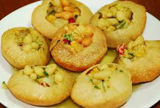

Home
Paneer Butter Tika Masala

Paneer Butter Tika Masala is a rich and creamy Indian dish made with paneer (Indian cottage cheese) cooked in a spiced tomato and butter sauce.
Ingredients
- 200g paneer, cubed
- 2 tablespoons butter
- 1 large onion, finely chopped
- 2 tomatoes, pureed
- 1 tablespoon ginger-garlic paste
- 1 teaspoon red chili powder
- 1 teaspoon garam masala
- 1/2 cup heavy cream
- Salt to taste
Steps
- Heat butter in a pan and sauté the chopped onions until golden brown.
- Add the ginger-garlic paste and cook for a minute.
- Add the pureed tomatoes, red chili powder, and garam masala. Cook until the oil separates from the masala.
- Add the cubed paneer and mix well to coat the paneer with the masala.
- Add the heavy cream and simmer for 5 minutes. Adjust salt to taste.